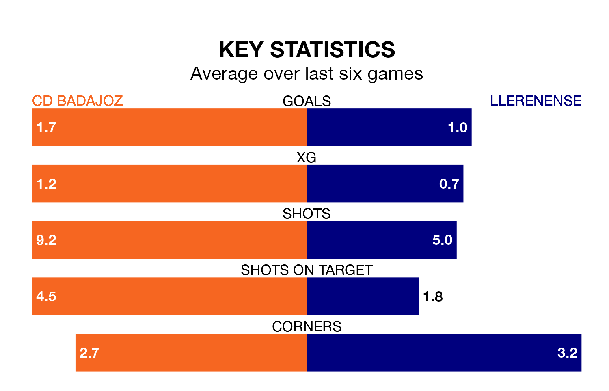

Llerenense travel to CD Badajoz on early Sunday in the Segunda División RFEF Group 5.
The visitors come into the game on the back of a win in their last match, having beaten Montijo 3-1 at home, with two goals from Daniel Martínez Rojo and one from Pablo Platero González.
Badajoz, meanwhile, lost their last match, 3-2 against SS Reyes, with their goals scored by Ewan Urain Aird and Guillermo Castrillejo Manso.
Badajoz are 15th in the table after 33 games, of which they have won eight and drawn 13, earning 37 points.
Llerenense are two places ahead of the home side in 13th, with 11 wins and eight draws putting them on 41 points.
With 28 goals in 33 games so far this season, the visitors are scoring at below the league average rate with 0.8 goals per game. But they are conceding fewer than average too, letting in 33 goals at a rate of 1.0 per game.
Badajoz are also below average scorers, with 1.0 goal per game, compared to a league average of 1.1. They have conceded 1.1 goals per game.
Badajoz are in mixed form in the Segunda División RFEF Group 5, with two wins and two draws from their last six games.
And also with two wins and two draws over that period, Llerenense's form is identical – they have both taken eight points from 18.
Updated: 10:44 (UTC), 30/04/24